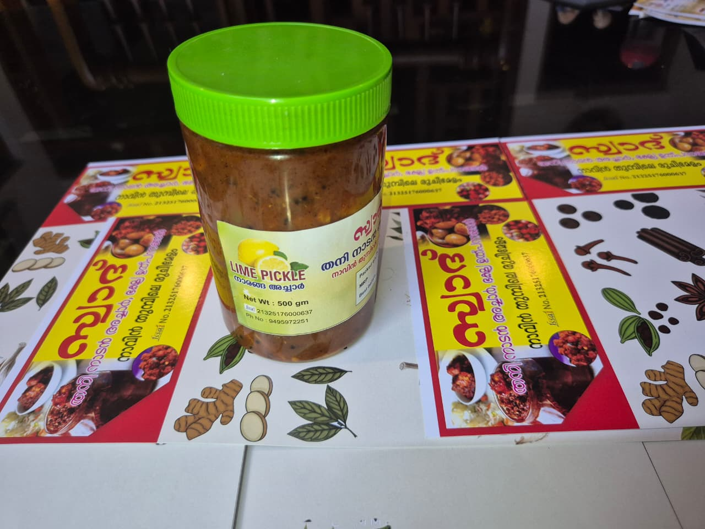

What sizes and prices are available for the lemon pickle?
Two bottle sizes are available: 250g for ₹50 and 500g for ₹100. You can order 1 to 5 bottles at a time directly on WhatsApp.

Salt-cured lemons blended with roasted masala and gingelly oil. Bright citrus tang with a warm spice finish that deepens beautifully as it rests.
Cost per weight: 250g: ₹50 | 500g: ₹100
This lemon pickle Kerala homemade batch is made for people who love a lively balance of citrus sharpness, roasted spice, and gentle bitterness that matures into rich flavor over time. Our lemons are cleaned thoroughly, dried, and cured with salt before they are blended with chilli powder, mustard, fenugreek, ginger-garlic notes, and gingelly oil. That pre-curing stage is important because it helps the peel soften naturally and lets the masala bind evenly. The result is a traditional Kerala style pickle that tastes fresh in the first week and becomes deeper as it rests. Customers use it with rice gruel, curd rice, appam, chapati, and even simple kanji dinners because one spoon instantly lifts the plate with tang and aroma.
At Swadhu Nadan Acharukal, we prepare this lemon pickle in small batches so the quality remains stable from bottle to bottle. Large factory runs often flatten flavor, but small-batch cooking allows us to control heat, oil level, and salt integration more carefully. We follow hygienic bottling and food-safe packing, and each order is handled with direct communication over WhatsApp. If you are searching lemon pickle Kerala homemade, this page gives you a dedicated URL with full details, making it easier for Google users and customers to land exactly where they need. We are a home-based FSSAI registered business, and our approach combines traditional recipe values with practical modern packaging for reliable delivery.
Taste-wise, this pickle starts with bright acidity and then opens into a warm masala finish. The lemon peel contributes depth, while mustard and fenugreek provide authentic Kerala achar character. People who like medium spice find this especially enjoyable because it has punch without overpowering the meal. It is a versatile pickle for daily use, but also works beautifully in travel meals where dry side dishes can feel bland. A spoon of this lemon achar with curd rice or chapati can make a quick lunch feel complete. We also provide guidance for bottle quantity based on family size, and can help you combine orders with other products when needed.
For customers abroad or outside Kerala sending food gifts to family, lemon pickle is often the safest first choice because it suits multiple meal styles and age groups. The shelf life is good under clean storage, and flavor develops pleasantly across weeks. Choose your preferred bottle size, select quantity, and place the order from the WhatsApp button below for quick response and confirmation.
Two bottle sizes are available: 250g for ₹50 and 500g for ₹100. You can order 1 to 5 bottles at a time directly on WhatsApp.
It is medium to spicy in the Kerala homemade style — bright citrus acidity that opens into a warm masala finish with mustard and fenugreek.
Up to 6 months unopened. After opening, consume within 45 days for best taste, store in a cool dry place, and always use a clean, dry spoon.